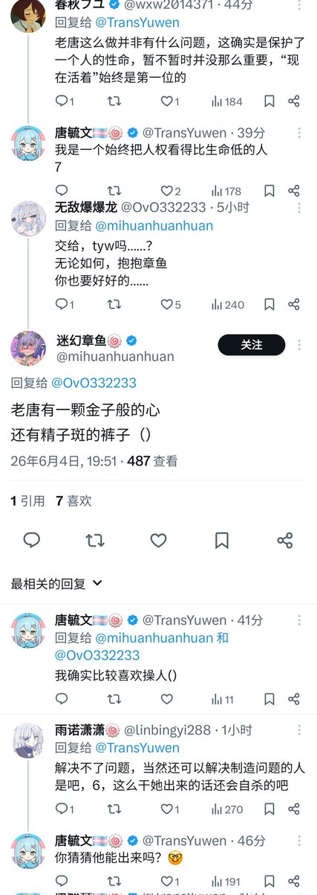
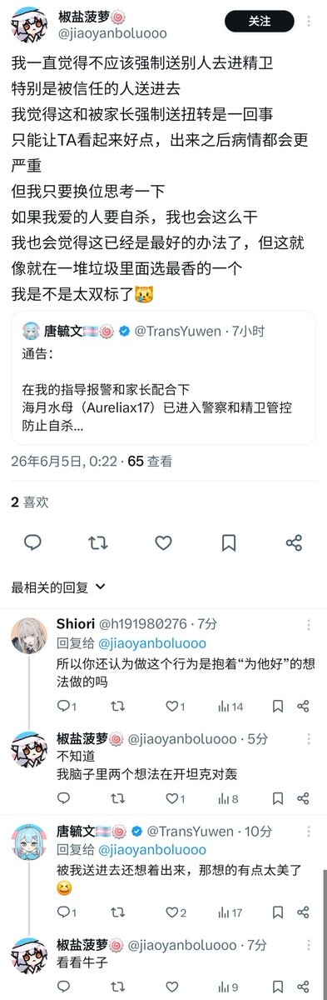

@h191980276 ：




抓进精卫强制住院和抓进监狱其实没有太多的区别，但是入狱得要公安立案、检察院起诉和法院一审，可能还有二审再审抗诉等等，而被住院者连上诉权和非单一机构的监督复审都没有就彻底进去了，这真是今天社会最残酷的东西之一。
就说那些说“干的好”的那些人，不要在这跟我演什么是帮人助人，你自己心里心理比谁清楚这行为是你是把它当做迫害是为了人好。也不要在这装什么生命不生命的，捧着一个以迫害他人为乐的以教唆别人自杀为荣表示害死人有“成就感”的人，你们就是闻着血腥味兴奋才来的，不要在给我演温情脉脉 https://t.co/YZos2s0aBQ https://t.co/BnqmIinVUA